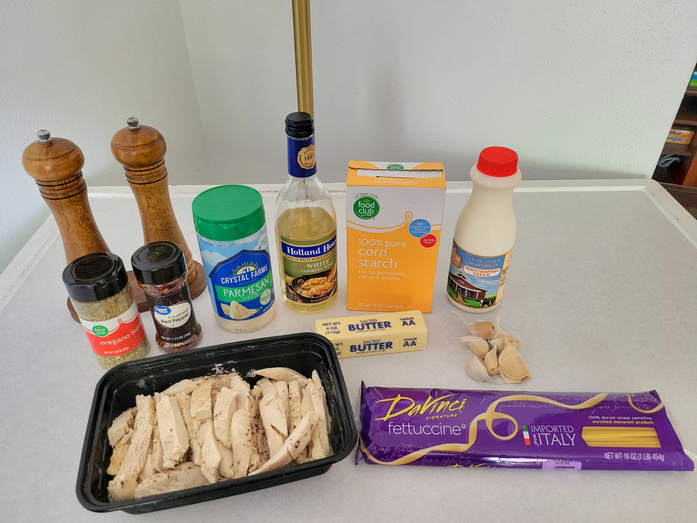

This is one of my favorite dishes to make when I'm craving comfort food. I make a large batch because I'm a huge fan of leftovers to avoid cooking every day.

Note: Unless I specify whole packages/containers of the ingredients, I estimate measurements because I'm lazy and don't use measuring cups (I also don't have a dishwasher). I taste and see what it needs, so these measurements are meant to be a guide (I'm sorry if this offends anyone who likes to be more precise). Maybe this is why I don't do much baking. Feel free to adjust amounts to your liking.
Recipe
Ingredients
1 pound of fettuccine noodles
1 pint heavy cream
1 stick butter
1-2 pounds of cooked chicken breasts, cut into strips
5-6 cloves garlic (minced or squeeze-pressed)
3/4 cup parmesan
1/4 cup white cooking wine
1-2 Tbs corn starch or flour (to thicken)
1 Tbs oregano
1 tsp red pepper flakes
salt and cracked black pepper, to taste
Directions
For tender chicken, I loosely follow this method. Note: I cut my chicken breasts in half first so they cook faster. After they're cooked through, just cut them into strips, as shown in the ingredient picture.
Bring water to a boil in a large pot for the noodles.
For the sauce, melt your butter in a separate large saucepan. Add garlic and cook until fragrant. Add cornstarch, incorporate quickly. Add cooking wine and chicken breasts, allow to simmer for a couple minutes. Add heavy cream, parmesan, and spices.